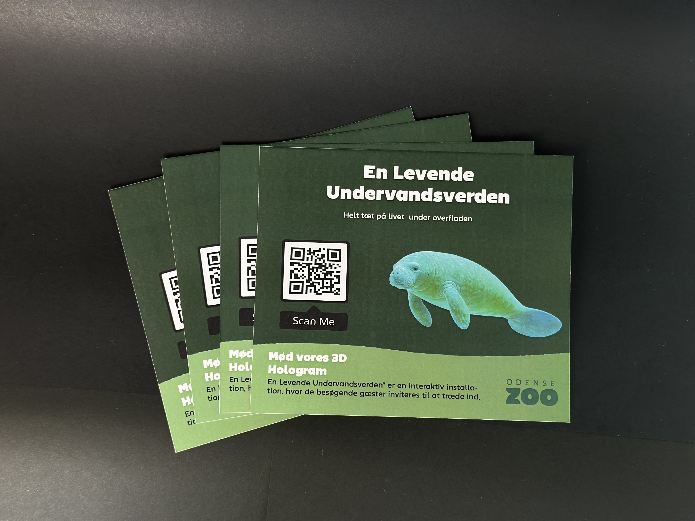

PROJEKT INFO
På dette projekt fokuserer jeg på at producere æstetiske flyer-designs med et rent og fagligt udtryk, ved at følge designprincipper. Flyerne støttede en visuel præsentation af en installation og fremhævede de vigtigste aspekter.
Målet var at skabe en visualisering af, hvad installationen gik ud på, samt at dele en link via QR-kode, der kunne føre til en hjemmeside med mere information om projektet.
Jeg undersøgte visuelle trends inden for flyer design.
Jeg redigerede designet med fokus på layout, farver og typografi.
Produktet blev udskrevet i høj kvalitet.
Jeg lærte at arbejde mere bevidst med produktets visuelle kommunikation, layout og typografi, samt hvordan støtte materialer kan understøtte et projekt.